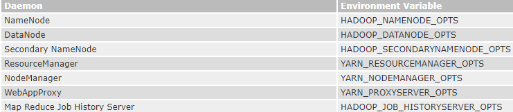

overview：官方文档中的描述实际上比百度上绝大多数的博客写的要好，很全面，所以把集群配置、安全模式、HA部分翻译一下
一、 Hadoop 集群配置
1. 目标
1.1 这个文档描述了怎样安装和配置从几个节点到几千节点的hadoop集群，为了能够更好的使用hadoop，你可能需要先在单节点上实验一下。
1.2 当前文档不包括高级功能比如安全和HA的内容
2. 准备
2.1 安装java
2.2 从apache镜像下载稳定版的hadoop
3. 安装
4. 非安全模式下配置hadoop
4.1 Hadoop的Java配置是由两种类型的重要配置文件驱动
4.1.1 只读的默认配文，这个文件原则上不需要修改
4.1.2 site-specific配文，用户用来自定义配置的，优先级比default高
4.2 另外，也可以通过发行版的bin目录中的hadoop脚本比如etc/hadoop/hadoop-env.sh和 etc/hadoop/yarn-env.sh来配置
4.3 要配置Hadoop集群，有2处需要配置， Hadoop守护进程执行的环境以及Hadoop守护程序的配置参数。
4.4 HDFS守护程序是NameNode，SecondaryNameNode和DataNode。 YARN进程是是ResourceManager，NodeManager和WebAppProxy。 如果使用MapReduce，则MapReduce作业历史服务器也将运行。 对于大型项目，它们通常在单独的节点上运行
4.5 Hadoop守护进程执行的环境
4.5.1 使用etc/hadoop/hadoop-env.sh和可选的etc/hadoop/mapred-env.sh and etc/hadoop/yarn-env.sh脚本来设置自定义的site-specific 的hadoop守护进程环境
4.5.2 至少，要在每个远程节点指定正确的JAVA_HOME
4.5.3 可以使用如下的配置来配置独立的守护进程

4.5.4 例如，让NN并行的GC，则要在hadoop-env.sh添加如下的配置
export HADOOP_NAMENODE_OPTS="-XX:+UseParallelGC"
4.6 Hadoop守护进程的配置参数
4.6.1 etc/hadoop/core-site.xml 核心配置，也就是hadoop的配置
Parameter
|
Value |
Notes |
fs.defaultFS |
NameNode URI |
hdfs://host:port/
|
io.file.buffer.size |
131072 |
Size of read/write buffer used in SequenceFiles.
|
4.6.2 etc/hadoop/hdfs-site.xml hdfs的站点配置，也就是hdfs的配置
{1} NN的
Parameter
|
Value |
Notes |
dfs.namenode.name.dir
|
NameNode 的持久化目录
在 local filesystem保存 namespace and transactions logs persistently的Path |
如果是都好分隔的，会冗余存储，也就是多目录配置，虽然冗余，但可靠性提高 |
dfs.hosts / |
白名单 |
为空表示全都可以，不为空只认设置的 |
dfs.hosts.exclude |
黑名单 |
加入意味着不能加入集群，会强制下线，下线前会复制数据 |
dfs.blocksize |
268435456 |
块大小 |
dfs.namenode.handler.count |
10 |
https://blog.csdn.net/turk/article/details/79723963
NN中用来处理DN请求的线程的线程池的容量. |
{2} DN
二、 安全模式下的hadoop
2.1 kerberos是一种linux上的SSO认证系统
3. 简介
3.1 本文档描述了如何在安全模式下为Hadoop配置身份验证
3.2 在默认情况下，Hadoop以非安全模式运行，不需要身份验证。通过配置Hadoop在安全模式下运行，每个用户和服务都需要通过Kerberos验证才能使用Hadoop服务
3.3 Hadoop的安全特性由Authentication（认证）, Service Level Authorization（服务级别认证）, (Authentication for Web Consoles)(http://hadoop.apache.org/docs/r2.7.3/hadoop-project-dist/hadoop-common/HttpAuthentication.html)（web控制台认证）和Data Confidentiality（数据保密）组成。
4. 认证
4.1 终端用户帐号
4.1.1 当服务级身份验证开启时，在安全模式下使用Hadoop的最终用户需要通过Kerberos进行身份验证。进行身份验证的最简单方法是使用Kerberos的kinit命令。使用Kerberos keytab文件的程序认证可能会在使用kinit的交互登录不可用时使用。
4.2 hadoop集群中各个角色的用户账号
4.2.1 确保HDFS和YARN在不同的用户下运行运行，比如hdfs和yarn用户。另外，确保MapReduce JobHistory服务器作为不同的用户(如mapred用户)运行。建议让它们共享一个Unix用户组，例如hadoop。有关组管理，请参阅“从用户到组的映射”
User:Group
|
Daemons |
hdfs:hadoop |
NameNode, Secondary NameNode, JournalNode, DataNode
|
yarn:hadoop |
ResourceManager, NodeManager
|
mapred:hadoop |
MapReduce JobHistory Server
|
4.3 Hadoop和 Users的Kerberos身份(principals)
4.3.1 要在hadoop中以安全模式运行hadoop。需要Kerberos 身份。auhenticate信息保存在设置了适当rwx权限的keytab文件中，由服务读取
{1} 每个Hadoop服务实例都必须配置他的Kerberos principal和keytab文件位置。
{2} 一个服务实体的一般格式是：服务名/_HOST@REALM.TLD。比如：dn/_HOST@EXAMPLE.COM。
{3} Hadoop通过允许服务principal的主机组件被指定为_HOST通配符来简化配置文件的部署。每个服务实例都会用它们自己当前运行的合法主机名来代替_HOST。这就允许管理员给所有节点部署相同设置的配置文件。但是，keytab文件将会不同。
4.3.2 HTTP web控制台应该由与RPC不同的主体提供服务
4.3.3 下面的小节展示了Hadoop服务的credentials示例
三、 使用QJM配置HDFS HA
1. 目标
1.1 这篇文档提供了HDFS HA的概览和使用QJM方式配置HDFS集群的方法
1.2 这篇文档假定读者已经有一定的hdfs集群知识
2. 注意：使用QJM或者传统的共享存储
2.1 本片文档讨论的时怎样使用qjm在ANN和SNN之间共享edit logs，使用NFS需要查看另外一篇
3. 背景
3.1 在Hadoop 2.0.0之前，NameNode是HDFS集群中的单点故障(SPOF)。每个集群都有一个NameNode，如果该机器或进程变得不可用，那么整个集群将不可用，直到NameNode重新启动或在单独的机器上启动
3.2 这从两个方面影响了HDFS集群的整体可用性
3.2.1 在发生意外事件(如机器崩溃)的情况下，在操作员重新启动NameNode之前，集群将不可用
3.2.2 计划的维护事件(如NameNode机器上的软件或硬件升级)将导致集群停机
3.3 HDFS高可用性特性解决了上述问题，它提供了在同一个集群中以主动/被动配置运行两个冗余的namenode和一个热备份的选项。这允许在机器崩溃的情况下快速地将故障转移到新的NameNode，或者为计划的维护提供由管理员发起的优雅的故障转移
4. 架构
4.1 在典型的HA集群中，两台独立的机器被配置为NameNodes。在任何时间点，其中一个namenode处于活动状态，另一个处于备用状态。活动的NameNode负责集群中的所有客户端操作，而备用服务器只是充当一个奴隶，维护足够的状态，以便在必要时提供快速故障转移
4.2 为了使备用节点的状态与活动节点保持同步，两个节点都与一组称为“JournalNodes”(JNs)的独立守护进程通信。当活动节点执行任何名称空间修改的操作时，它会将修改的记录持续记录到这些JNs中的大多数。备用节点能够从JNs读取编辑，并不断监视编辑日志的更改。当备用节点看到编辑时，它将它们应用到自己的命名空间。在发生故障转移时，备用服务器将确保在将自己提升到活动状态之前已从JounalNodes读取了所有edit logs。这可以确保在发生故障转移之前完全同步NN的状态
4.3 为了提供快速的故障转移，备用节点还必须具有关于集群中块的位置的最新信息。为了实现这一点，datanode配置了两个namenode的位置，并向它们发送块位置信息和心跳
4.4 一个HA集群在同一时刻只有一个ANN是至关重要的，否则，NN的状态将很快产生分歧，可能导致数据丢失或其他不正确的结果。为了确保这一点并且防止脑裂，JN只允许ANN写入。在故障转移期间，要激活的NameNode将简单地接管向JournalNodes写入的任务，这将会有效的组织其他NN继续处于Active状态，允许新的ANN安全的进行故障转移。
5. 硬件资源
5.1 为了部署一个HA集群，需要准备如下：
5.1.1 NN节点
5.1.2 JN节点
{1} 至少3个，奇数，JN集群可以在最多(N-1`)/2个宕机中运行
5.2 注意，在HA集群中,SNN也可以触发NN的checkpoints,因此不需要运行一个SecondaryNN、CheckpointNode、BackupNode，这样做会报错。这还允许将未ha的HDFS集群重新配置为ha，从而重用以前专门用于辅助NameNode的硬件。
6. 部署
6.1 配置概览
6.1.1 与Federation配置类似，HA配置是向后兼容的，允许现有的NameNode配置无需更改即可工作。新配置的设计使集群中的所有节点可以具有相同的配置，而不需要根据节点的类型将不同的配置文件部署到不同的机器上。
6.1.2 与HDFS Federation一样，HA集群重用nameservice ID来标识单个HDFS实例，该实例实际上可能包含多个namenode。此外，HA中还添加了一个名为NameNode ID的新概念。集群中的每个不同的NameNode都有一个不同的NameNode ID来区分它。为了支持用一个配置文件配置所有NN，相关的配置参数以nameservice ID和NameNode ID作为后缀。
6.2 配置细节
6.2.1 要配置HA的NN，必须添加几个服务端的配置到hdfs-site.xml
6.2.2 顺序并不重要，但必须在配置其他选项之前确定dfs.nameservices和dfs.ha.namenodes.[nameservice ID]的值
6.2.3 dfs.nameservices 集群对外提供服务所暴露的逻辑名称
<property>
<name>dfs.nameservices</name>
<value>mycluster</value>
</property>
6.2.4 dfs.ha.namenodes.[nameservice ID] NN的唯一标识
<property>
<name>dfs.ha.namenodes.mycluster</name>
<value>nn1,nn2</value>
</property>
{1} 目前只允许最多2个NN
6.2.5 rpc地址和http地址
{1} 如果设置了安全模式，要使用https
6.2.6 dfs.namenode.shared.edits.dir JNs的地址列表， NN用来进行读写
<property>
<name>dfs.namenode.shared.edits.dir</name>
<value>qjournal://node1.example.com:8485;node2.example.com:8485;node3.example.com:8485/mycluster</value>
</property>
6.2.7 dfs.client.failover.proxy.provider.[nameservice ID] HDFS客户端用来跟ANN通信的java代理类，手动自动都需要
{1} DFS客户端将使用这个类来确定哪个NameNode是当前活动的，也就是哪个NN接受请求。目前与Hadoop一起提供的唯一实现是ConfiguredFailoverProxyProvider，所以除非您使用自定义的，否则就使用它
<property>
<name>dfs.client.failover.proxy.provider.mycluster</name>
<value>org.apache.hadoop.hdfs.server.namenode.ha.ConfiguredFailoverProxyProvider</value>
</property>
6.2.8 dfs.ha.fencing.methods 将用于在故障转移期间隔离ANN的脚本或Java类的列表
{1} 为了保证系统的正确性，在任何给定的时间只有一个NameNode处于活动状态。重要的是，在使用Quorum Journal Manager时，只允许一个NameNode向JournalNodes写入，因此不会有脑裂的情况。然而，当一个故障转移发生时，前面的ANN仍有接收客户端的读请求，此时响应给客户端的数据可能是过期的，直到新的NameNode在尝试向日志节点写入时关闭。因此，使用QJM时仍需要配置一些隔离方法。然而，为了提高隔离机制不可用时的可用性，建议配置托底方法在fecing method方法不可用时返回true。注意，如果你选择不使用托底，仍然需要配置一些配置，比如“shell(/bin/true)”。故障转移期间的隔离方法以一个回车分割的列表的形式来配置，在隔离成功之前会一直按序尝试。有2种方式，shell和sshfence，也可以自定义。
{2} sshfence SSH登录到ANN并且kill进程
[1] sshfence方式会将ssh登陆到目标节点，并使用fuser终止监听服务的TCP端口的进程。为了使这个隔离方法工作，它必须能够在免密钥的情况下通过SSH连接到目标节点。因此，还必须配置dfs.ha.fencing.ssh.private-key-files，它是一个以逗号分隔的SSH私有密钥文件列表
<property>
<name>dfs.ha.fencing.methods</name>
<value>sshfence</value>
</property>
<property>
<name>dfs.ha.fencing.ssh.private-key-files</name>
<value>/home/exampleuser/.ssh/id_rsa</value>
</property>
[2] 可选的，可以配置一个非标准的用户名或者端口执行SSH，可以配置毫秒为单位的过期时间。之后，隔离方法会失效。
<property>
<name>dfs.ha.fencing.methods</name>
<value>sshfence([[username][:port]])</value>
</property>
<property>
<name>dfs.ha.fencing.ssh.connect-timeout</name>
<value>30000</value>
</property>
{3} shell 运行一个shell脚本命令去隔离ANN
<property>
<name>dfs.ha.fencing.methods</name>
<value>shell(/path/to/my/script.sh arg1 arg2 ...)</value>
</property>
6.2.9 dfs.ha.fencing.methods参数的理解，官方文档直译不好理解。
{1} 当配置了HDFS HA集群时，会有两个NameNode，为了避免脑裂。也就是两个NN都为Active状态(split-brain scenario)。当发生failover时，Standby节点要先执行fence方法把old-Active节点中不健康的NameNode服务给杀掉（这个过程就称为fence），然后再提升为active。fence有2种，sshfence和shell。
{2} <value>的所有方法都会被顺序的执行，是一个回车分割的列表，最后返回结果即为fence过程的结果。如果fence执行成功，就把原来为Standby的NameNode的状态提升为Active。sshfence方法会通过ssh远程调用fuser命令去找到NameNode服务并杀死它。我们的目标是当发生failover时，不论如何，就算前面的sshfence执行失败（比如服务器上不存在fuser命令），依然把Standby节点的状态提升为Active，所以最后无论如何要配置一个shell(/bin/true)，也就是托底方法。保证不论前面的方法执行的情况如何，最后fence过程返回的结果都为true。dfs.ha.fencing.ssh.private-key-files配置了执行远程ssh命令所需要用到的私钥。
|
<property>
<name>dfs.ha.fencing.methods</name>
<value>
sshfence
shell(/bin/true)
</value>
</property>
<property>
<name>dfs.ha.fencing.ssh.private-key-files</name>
<value>/home/dc/.ssh/id_rsa</value>
</property> |
6.2.10 部署细节
{1} 所有必要的设置完成后，必须先开启JN进程，使用hadoop-daemon.sh start journalnode
{2} 一旦JN集群启动完毕，必须首先同步两个HA namenode的磁盘元数据
[1] 如果要设置新的HDFS集群，应该首先在其中一个namenode上运行format命令(HDFS namenode -format)
[2] 如果您已经格式化了NameNode，或者正在将不支持ha的集群转换为支持ha的集群，那么现在应该通过在未格式化的NameNode上运行“hdfs NameNode -bootstrapStandby”命令，将已经格式化的NameNode元数据目录的内容复制到当前未格式化的NameNode。运行此命令还将确保JournalNodes(由dfs.namenode.share .edit .dir配置)包含足够的编辑事务，以便能够启动两个namenode
[3] 如果要将非HA NameNode转换为HA，应该运行“hdfs NameNode - initializesharede”命令，该命令将使用本地NameNode编辑目录中的编辑数据初始化JN集群
{3} 此时，您可以启动两个HA NameNode，就像您通常启动NameNode一样
{4} 您可以通过浏览它们配置的HTTP地址来分别访问namenode的每个web页面。您应该注意到，在配置的地址旁边是NameNode的HA状态(“备用”或“活动”)。无论何时启动HA NameNode，它最初都处于备用状态
6.2.11 命令
{1} 现在已经配置并启动了HA namenode，您将可以访问一些额外的命令来管理HA HDFS集群。具体来说，您应该熟悉“hdfs haadmin”命令的所有子命令。
Usage: haadmin
[-transitionToActive <serviceId>]
[-transitionToStandby <serviceId>]
[-failover [--forcefence] [--forceactive] <serviceId> <serviceId>]
[-getServiceState <serviceId>]
[-checkHealth <serviceId>]
[-help <command>]
{2} 下面这个指南描述了上面命令的高级用法，
[1] transitionToActive and transitionToStandby
(1) 转变给定的a或s的状态
这些子命令分别将给定的NameNode转换为活动状态或备用状态。这些命令不尝试执行任何fence隔离方法，因此一般不使用。应该使用“hdfs haadmin -failover”子命令替代
[2] failover
(1) 启动两个namenode之间的故障转移
这个子命令会触发2个NN的故障转移机制。
如果第一个NameNode处于standby，则此命令将第二个NameNode转换为active，不会报错。
如果第一个NameNode处于acitve，则尝试将其优雅地转换为standby。如果失败，将依次尝试隔离方法方法(由dfs.ha. fence .methods配置，回车分隔，多个)，直到成功为止。只有隔离方法返回true，第二个NameNode才会被转换为active。如果fence方法执行到最后一个都没有成功，第二个NameNode将不会转换为active，并返回一个错误
[3] getServiceState
(1) 确定给定的NameNode是活动的还是备用的
连接到提供的NameNode以确定其当前状态，将“standby”或“active”打印到标准输出。cron作业或监视脚本可能会使用这个子命令，它们需要根据NameNode当前是活动的还是备用的而采取不同的行为
[4] checkHealth
(1) 检查给定NameNode的健康状况
连接到提供的NameNode以检查其健康状况。NameNode能够对自身执行一些诊断，包括检查内部服务是否按预期运行。如果NameNode是健康的，这个命令将返回0，否则返回非0。可以使用此命令进行监视
此命令还没有实现既定功能，目前总是返回成功，除非给定的NameNode完全关闭
6.3 自动故障转移
6.3.1 简介
{1} 上面的部分描述了如何配置手动故障转移。在这种模式下,系统不会自动触发从active到SNN的故障转移，,即使ANN宕机了。本节描述如何配置和部署自动故障转移
6.3.2 组件
{1} 自动故障转移向HDFS部署添加了两个新组件:ZooKeeper quorum和ZKFailoverController进程(缩写为ZKFC)
{2} Apache ZooKeeper是一种高可用性的服务，用于维护少量的协调数据、通知客户端数据的更改以及监控客户端故障。自动HDFS故障转移的实现在以下方面依赖于ZooKeeper
[1] 失败检测
(1) 集群中的每个NameNode机器都在ZooKeeper中维护一个持久会话。如果机器崩溃，ZooKeeper会话将到期，通知另一个NameNode应该触发故障转移
[2] 选举ANN
(1) ZooKeeper提供了一个简单的机制来选举一个ANN。如果当前ANN崩溃，则另一个节点可能在ZooKeeper中获取一个独占锁，指示它应该成为下一个ANN
{3} ZKFailoverController (ZKFC)是一个新的组件，它是hadoop提供的一个ZooKeeper客户端，同时监控和管理NameNode的状态。运行NameNode的每台机器也运行着一个ZKFC，zkfc的作用：
[1] 健康检查
ZKFC通过一个健康检查命令定期ping它的本地NameNode。只要NameNode及时并且以健康状态响应，ZKFC就认为节点是健康的。如果节点崩溃、冻结或以其他方式进入不健康状态，则健康监视器将其标记为不健康
[2] ZooKeeper session management
如果本地NN是健康的，ZKFC会在ZooKeeper中打开一个会话。如果本地NameNode是活动的，它还持有一个特殊的znode：“锁”。此锁使用ZooKeeper的临时节点;如果会话过期，锁节点将被自动删除
[3] ZooKeeper-based election
如果本地NameNode是健康的,ZKFC看到没有其他节点保存锁znode,它就会试图获得锁。如果成功,那么它就“赢得了选举”,并负责运行一个故障转移,使其本地NameNode转为active。故障转移过程类似于上面描述的手动故障转移:首先,之前的ANN被成功的割裂。然后本地NameNode转换到活动状态
6.3.3 core-site.xml
<property>
<name>ha.zookeeper.quorum</name>
<value>zk1.example.com:2181,zk2.example.com:2181,zk3.example.com:2181</value>
</property>
6.3.4 hdfs-site.xml
<property>
<name>dfs.ha.automatic-failover.enabled</name>
<value>true</value>
</property>
6.3.5 在zk上初始化
bin/hdfs zkfc -formatZK
这将在ZooKeeper中创建一个znode，自动故障转移系统将其数据存储在znode中
6.3.6 使用群起脚本start-dfs.sh启动集群
由于在配置中启用了自动故障转移，start-dfs.sh脚本将在任何运行NN的节点上自动启动ZKFC守护进程。当zkfc启动时，它们将自动选择要激活的namenode之一
{1} 也可以手动启动集群
sbin/hadoop-daemon.sh
bin/hdfs start zkfc
6.3.7 安全访问zk
{1} 如果您正在运行一个安全集群,您可能希望确保存储在ZooKeeper的信息也安全。这可以防止恶意客户机修改ZooKeeper的元数据,或者可能触发错误故障转移
{2} 为了保护ZooKeeper中的信息，首先将以下内容添加到您的core-site.xml文件中
<property>
<name>ha.zookeeper.auth</name>
<value>@/path/to/zk-auth.txt</value>
</property>
<property>
<name>ha.zookeeper.acl</name>
<value>@/path/to/zk-acl.txt</value>
</property>
[1] 请注意这些值中的“@”字符—这指定配置不是内联的，而是指向磁盘上的文件
[2] 第一个配置文件指定了一个ZooKeeper身份验证列表，其格式与ZK CLI使用的格式相同。例如，您可以指定如下内容
digest:hdfs-zkfcs:mypassword
6.3.8 测试自动故障转移
{1} 设置了自动故障转移之后，应该测试它的操作。为此，首先找到活动的NameNode。您可以通过访问NameNode web接口来判断哪个节点是活动的——每个节点在页面的顶部报告其HA状态
{2} 一旦定位了活动的NameNode，就可以认为认为故意制造一些故障。例如，您可以使用kill -9 <pid of NN>来模拟JVM崩溃。或者，您可以对机器进行电源循环或拔掉它的网络接口，以模拟不同类型的停机。在触发您希望测试的停机之后，另一个NameNode应该在几秒钟内自动激活。检测故障并触发故障转移所需的时间取决于ha.zookeeper.session-timeout的配置，但默认为5秒
{3} 如果测试不成功，则可能是配置错误。检查zkfc守护进程和NameNode守护进程的日志，以便进一步诊断问题
{4} 自动故障转移问答
[1] zkfc和NN进程的启动顺序有先后吗？
(1) 没有，随意
[2] 我应该设置哪些额外的监视？
(1) 要添加zk的监控，您应该在运行NameNode的每个主机上添加监控，以确保ZKFC保持运行。例如，在某些类型的ZooKeeper故障中，ZKFC可能会意外退出，应该重新启动以确保系统准备好进行自动故障转移。另外，您应该监视ZooKeeper集群中的每个节点。如果zk崩溃，那么自动故障转移将不起作用
[3] 如果zk崩溃会怎样？
(1) 如果ZooKeeper集群崩溃，则不会触发自动故障转移。但是，HDFS将继续运行，不会受到任何影响。当ZooKeeper重新启动时，HDFS将重新连接
[4] 可以指定NN节点为优先actice的吗？
(1) 不。目前，这是不支持的。但是首先启动的NameNode将成为活动的。您可以选择以特定的顺序启动集群，以便首选节点首先启动
[5] 在配置自动故障转移的情况下启动手动故障转移
(1) 即使配置了自动故障转移，您也可以使用相同的hdfs haadmin命令启动手动故障转移。它将执行协调的故障转移
6.3.9 在HA的集群上进行更新/终结/回滚HDFS
{1} 当在不同版本的HDFS之间移动时，有时可以简单地安装较新的软件并重新启动集群。然而，有时候，升级正在运行的HDFS版本可能需要更改磁盘上的数据。在这种情况下，必须在安装新软件之后使用HDFS Upgrade/Finalization/Rollback 功能。在HA环境中，这个过程会变得更加复杂，因为NN所依赖的磁盘元数据是分布式的，既分布在对中的两个HA NNs上，也分布在QJM用于共享编辑存储的JournalNodes上。本文档旨在说明如何使用HDFS Upgrade/Finalize/Rollback 功能
{2} 执行HA upgrade
[1] 关闭所有NNs,并安装新软件。
[2] 启动所有的JNs。注意，当执行升级、回滚或最终化操作时,JNs任何一个节点都不能宕机。否则操作将会失败。
[3] 启动一个NN并使用-upgrade参数
[4] 在启动时，此NN将不像HA设置中那样进入备用状态。相反，该NN将立即进入活动状态，执行本地存储目录的升级，并执行共享编辑日志的升级
[5] 此时，HA对中的另一个NN将与升级后的NN不同步。为了使它恢复同步并再次实现高可用性，应该运行 “sbin/hadoop-daemon.sh -bootstrapStandby”重新引导这个NameNode。用“-upgrade”参数启动第二个NN是一个错误
[6] 注意，如果您想在完成升级或回滚升级之前重新启动namenode，您应该像往常一样启动NNs，即不使用任何特殊的启动标志
{3} 结束一个在HA状态下运行的NN
[1] 当NNs正在运行且其中一个处于活动状态时，操作员将使用' hdfs dfsadmin -finalizeUpgrade'命令。此时的活动NN将执行共享日志的结束，其包含前一个FS状态的本地存储目录会被删除
{4} 执行升级后的回滚
[1] 两个NN都应该先关闭。开发者应该在启动升级过程的NN上运行回滚命令，该命令将对本地dirs以及共享日志(NFS或JNs)执行回滚。之后，应该启动这个NN，开发者应该在另一个NN上运行' -bootstrapStandby'，使两个NNs与这个回滚的文件系统状态保持同步。